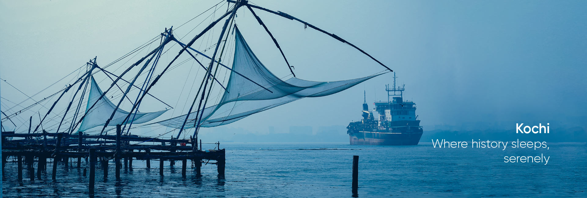

Varkala beach is famous for its rock cliffs, pristine sands, blue waters and mineral springs. The cliff accommodating stretches of shops, restaurants, resorts and beach houses provide everything a tourist is looking for. The view of sunrise and sunset from the Varkala beach is an exotic treat to watch.
More..Munnar is one of the most picturesque towns in the Western Ghats, Kerala. Blessed with abundant natural beauty, the hill station is surrounded by rolling hills sprinkled with a range of tea plantations. When it comes to nature, the place is a paradise for every soul looking to rejuvenate and relax.
More..
It was an important military station for Tipu Sultan when he led a military expedition to capture Malabar. The coins and artefacts found in archaeological excavations at Bekal fort indicate the strong presence of Mysore Sultans. Tipu Sultan's death during the Fourth Anglo-Mysore War ended Mysorean control in 1799.
More..Located 50 km from Kozhikode, the Thusharagiri Waterfalls comprise three waterfalls- Erattumukku, Mazhavil Chattom, and Thumbithullum Para. These ethereal sets of cascades can be reached by trekking through an exotic stretch that winds its way through lush greenery.
More..The Kerala Biodiversity Museum which was established on 5 June 2018 at Vallakadavu in Thiruvananthapuram aims to generate awareness about biodiversity and Nature among people. The key groups of people the museum targets include farmers, students, forest-dependent communities, artisans, students and scholars.
More..
These are the famous water lilies of Malarikkal, a rising tourist hotbed in Kerala, located in the southern tip of India. This natural phenomenon in the paddy fields turns the entire landscape into a luscious pink carpet that is a mesmerizing sight to behold.
More..